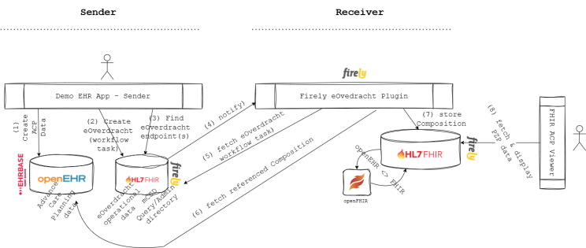
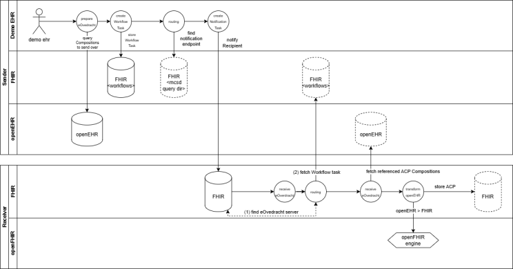
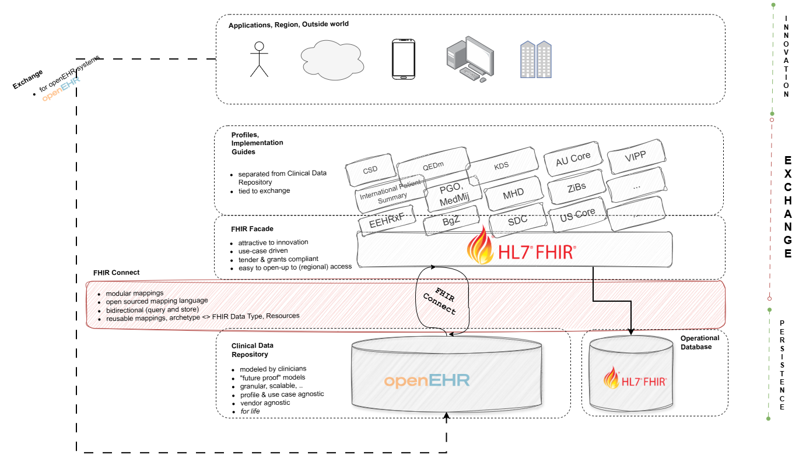

Introduction
To pique your interest, some of the keywords in this article are: mCSD, generic functions, FHIR, openEHR, ACP, and eOverdracht. There’s also a local setup, real code, and a demo at the end - for those who prefer running things over admiring them, feel free to scroll past the wall of text to the video at the bottom.
Context
eOverdracht is the national standard for the structured digital transfer of nursing and care information between healthcare providers in the Netherlands, ensuring continuity of care across settings by using standardized datasets and semantics.
We have FHIR Implementation Guides that describe how this care handover is realized using HL7 FHIR profiles, but how does that work in a hybrid architecture that includes openEHR?
To prove this can work, I’ve started a proof-of-concept architecture with working components, validating how the following concepts can be combined and mixed-and-matched:
- mCSD & Routing generic functions that we are currently developing as part of an initiative (https://build.fhir.org/ig/nuts-foundation/nl-generic-functions-ig/care-services.html)
- ACP on openEHR
- ACP on FHIR (something that PZP coalition is actively working on)
- eOverdracht
- FHIR Connect to support the hybrid architecture
tldr: all this works nicely with a UI to test it out and is available here: https://github.com/syntaric/eoverdracht-openehr with a docker compose, a readme and everything you need to set it up and click by yourself. If you need help, I'm happy to help.
Architecture

Architecture I wanted to validate was a hybrid one, where a referring organization uses openEHR (and FHIR), whereas the receiving organization uses FHIR only. It may make more sense to have it the other way around, but that's besides the point - the main goal was for me to prove that systems can use different standards and still be able to contribute to the overall patient journey.
To put it in layman's terms, in eOverdracht you have a sending side and a receiving side. In my architecture, I've setup EHRBase on the sending side together with a Firely Server for operational data (such as eOverdracht Workflow task and mCSD models).
On the receiving side, I explored the idea of having only FHIR available for both clinical and operational data. For all intents and purposes, this could simply be a FHIR API on a proprietary system (or on top of an EHR).
Data flow is simple:
- sender creates an ACP Composition and stores it in its own openEHR CDR
- when wanting to refer to the receiver, you create a FHIR Workflow task (as per eOverdracht IG)
- you find the right healthcare service (all according to the mCSD and Routing IG)...
- ... and notify the receiver.
- Receiver on the other side - after being notified fetches that FHIR Workflow tasks, takes the referenced Composition ( representing the ACP as it currently exists)...
- ... and reads it from sender's openEHR CDR.
- It then maps it to FHIR (because the receiver uses FHIR) and stores it in it's own FHIR repository.
- Receiver user is then able to view sender's openEHR data in the FHIR viewer.
Data flow .. or a more sexy representation of the data flow with some more nuances and details

Key concepts
The following key concepts worth mentioning are validated through this architecture approach:
mCSD and routing generic functions
As you may have stumbled upon, in Netherlands we are currently specifying and developing something called generic functions. Generic functions act as reusable building blocks for health data exchange, so instead of solving the same technical problems repeatedly within each system, these shared functions provide a common foundation for capabilities like querying, addressing, and secure communication, consent, etc.
One of the generic functions I've tested with this architecture is that of care service discovery and routing.
Firely server is used as an admin and query directory, syncing to a fake LRZA where it gets addressing entities from the 'receiving' side of the architecture.
openEHR plus FHIR in eOverdracht
Another idea I wanted to test out is one that we've validated a couple of months ago at a PZP hackaton already - that is whether openEHR ACP data model can be used together with a PZP implementation guide for advanced care planning.
I wanted to test how it would be possible to participate in a longitudinal patient journey where systems are differently capable, namely when one system wants to use openEHR as storage of data, whereas the other not (but provides a FHIR API).
To test this out, this PoC sets up a local EHRBase from vitagroup and a server from Firely , with a needed local openFHIR mapping engine in between that leverages already written FHIR Connect mappings for bidirectional mapping (see, I used all the words).
Firely eOverdracht plugin which accept a notification and resolves Workflow task from the sender FHIR server, READs the Composition and triggers openFHIR to map it to FHIR Resources. Then it stores those FHIR Resources in the receiving FHIR server.
Vendor neutral architecture
The architecture we have set up is completely vendor neutral, as it is built on open standards rather than proprietary technologies or integration engines. This approach gives organizations the freedom to evolve without being locked into a single supplier or platform.
At the bottom, as a foundation to everything - you have a properly modelled, future proof and use case agnostic openEHR CDR. But at the same time, you have FHIR API on top, which allows your third party application ecosystem to grow and to provide use cases to your end users.
Middle layer - FHIR Connect - makes it possible for you to add new use cases and support implementation guides currently in fashion, all without doing any kind of changes (read: extensions) to your core clinical data repository at the bottom.

You're welcome to take a look and play around yourself: https://github.com/syntaric/eoverdracht-openehr
If you’re interested in a proof of concept similar to this, adapted to your use case, architecture and deployed to your servers, feel free to reach out.